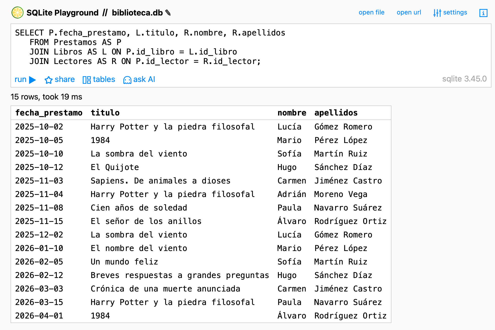
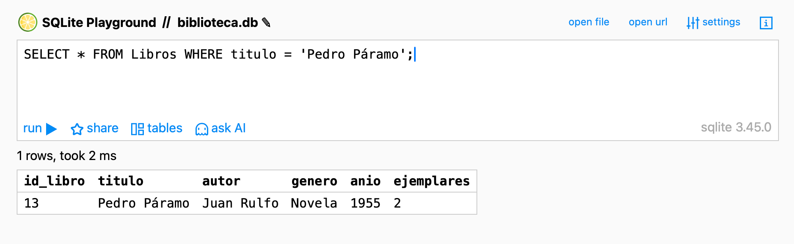
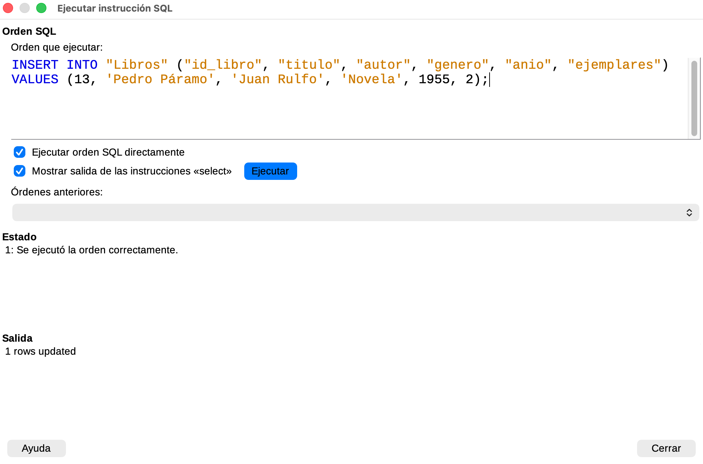

Contenido
Lo que vas a hacer hoy
- Aprender a combinar varias tablas con
JOINpara responder preguntas que cruzan datos. - Aprender a crear, modificar y borrar filas con
INSERT,UPDATEyDELETE. - Aplicar al menos 1 INSERT, 1 UPDATE y 1 DELETE en TU propia base de datos desde LibreOffice Base, vía Herramientas → SQL….
- Resolver los 10 retos de S5 sobre
biblioteca.dby dejar tu archivoretos_sql.sqlampliado a 20 consultas.
ImportanteAntes de empezar: descarga tus archivos de Moodle
Hoy descargas dos archivos de la tarea “TAREA - Bases de datos”:
- Tu
<tu_tema>.odb(el archivo sin sufijo). Este es el que vas a modificar hoy y el que seguirás usando hasta el final de la unidad. - Tu
retos_sql.sql(con los 10 retos de S4 resueltos).
El <tu_tema>-s4.odb (la copia de seguridad pre-SQL que dejaste en Moodle al cerrar S4) se queda en Moodle y no lo tocas. Es la “foto” del antes; no la necesitas hoy.
A lo largo de la sesión añadirás 1 INSERT, 1 UPDATE y 1 DELETE a <tu_tema>.odb desde Herramientas → SQL…, y al final lo subirás reemplazando el de Moodle. El retos_sql.sql lo abrirás con Pluma y le añadirás los 10 retos nuevos.
Detalles en Cómo se guarda tu trabajo entre sesiones.
Hoy trabajas en dos herramientas a la vez
ImportanteSQLime y LibreOffice Base, en paralelo
| Herramienta | Para qué la usas hoy |
|---|---|
SQLime sobre biblioteca.db |
Aprender JOIN, practicar INSERT/UPDATE/DELETE y resolver los 10 retos |
LibreOffice Base sobre tu .odb |
Aplicar 1 INSERT + 1 UPDATE + 1 DELETE en tu propia BD del proyecto, vía Herramientas → SQL… |
La mayor parte del tiempo estarás en SQLime. Al final de la sesión, abres tu .odb en Base y le llevas tres modificaciones.
1. Refresco rápido: vuelve a cargar biblioteca.db en SQLime
Como los equipos del IES se reinician cada noche, biblioteca.db ya no está en tu carpeta Descargas del día anterior. Descárgala de nuevo aquí.
Abre después https://sqlime.org/, pulsa open file y selecciona el archivo desde Descargas.
Comprueba que la barra superior pone biblioteca.db y que al pulsar tables ves las 3 tablas: Libros, Lectores, Prestamos. Si algo no encaja, repasa el apartado 1 de S4.
2. JOIN — combinar datos de varias tablas
Hasta ahora todas tus consultas iban a una sola tabla. Pero muchas preguntas reales cruzan tablas: la fecha de un préstamo está en Prestamos, el título del libro en Libros y el nombre del lector en Lectores. Con SELECT solo ya no llegas: necesitas JOIN.
2.1 INNER JOIN — la combinación más habitual
JOIN (que también puedes escribir como INNER JOIN, equivalente) une dos tablas a través de una columna que tienen en común — normalmente la clave primaria de la padre y la clave foránea de la hija. Sintaxis general:
<span id="cb1-1"><a aria-hidden="true" href="#cb1-1" tabindex="-1"></a><span class="kw">SELECT</span> columnas</span>
<span id="cb1-2"><a aria-hidden="true" href="#cb1-2" tabindex="-1"></a><span class="kw">FROM</span> tabla_a</span>
<span id="cb1-3"><a aria-hidden="true" href="#cb1-3" tabindex="-1"></a><span class="kw">JOIN</span> tabla_b <span class="kw">ON</span> tabla_a.columna_comun <span class="op">=</span> tabla_b.columna_comun;</span>En biblioteca, Prestamos.id_libro apunta a Libros.id_libro. Si los unimos por ahí, podemos pedir la fecha del préstamo y el título del libro en la misma fila:
<span id="cb2-1"><a aria-hidden="true" href="#cb2-1" tabindex="-1"></a><span class="kw">SELECT</span> Prestamos.fecha_prestamo, Libros.titulo</span>
<span id="cb2-2"><a aria-hidden="true" href="#cb2-2" tabindex="-1"></a><span class="kw">FROM</span> Prestamos</span>
<span id="cb2-3"><a aria-hidden="true" href="#cb2-3" tabindex="-1"></a><span class="kw">JOIN</span> Libros <span class="kw">ON</span> Prestamos.id_libro <span class="op">=</span> Libros.id_libro;</span>Devuelve 15 filas, una por cada préstamo, con la fecha y el título correspondientes mezclados en una sola tabla.
2.2 Alias con AS — escritura más corta
Escribir Prestamos.fecha_prestamo y Libros.titulo cada vez es largo. Para acortar puedes darle un alias a cada tabla con AS:
<span id="cb3-1"><a aria-hidden="true" href="#cb3-1" tabindex="-1"></a><span class="kw">SELECT</span> P.fecha_prestamo, L.titulo</span>
<span id="cb3-2"><a aria-hidden="true" href="#cb3-2" tabindex="-1"></a><span class="kw">FROM</span> Prestamos <span class="kw">AS</span> P</span>
<span id="cb3-3"><a aria-hidden="true" href="#cb3-3" tabindex="-1"></a><span class="kw">JOIN</span> Libros <span class="kw">AS</span> L <span class="kw">ON</span> P.id_libro <span class="op">=</span> L.id_libro;</span>Mismo resultado, menos texto. A partir de aquí usaremos alias.
Tip¿Y si dos tablas tienen una columna del mismo nombre?
Si en una consulta intervienen Prestamos y Libros, las dos tienen una columna id_libro. Si pides solo id_libro sin prefijar, SQLite te da error ambiguous column: id_libro. Soluciónalo prefijando con el alias: P.id_libro o L.id_libro.
Pruébalo: une tres tablas a la vez
Puedes encadenar varios JOIN en la misma consulta. Aquí cruzamos Prestamos con Libros (para el título) y con Lectores (para el nombre):
<span id="cb4-1"><a aria-hidden="true" href="#cb4-1" tabindex="-1"></a><span class="kw">SELECT</span> P.fecha_prestamo, L.titulo, R.nombre, R.apellidos</span>
<span id="cb4-2"><a aria-hidden="true" href="#cb4-2" tabindex="-1"></a><span class="kw">FROM</span> Prestamos <span class="kw">AS</span> P</span>
<span id="cb4-3"><a aria-hidden="true" href="#cb4-3" tabindex="-1"></a><span class="kw">JOIN</span> Libros <span class="kw">AS</span> L <span class="kw">ON</span> P.id_libro <span class="op">=</span> L.id_libro</span>
<span id="cb4-4"><a aria-hidden="true" href="#cb4-4" tabindex="-1"></a><span class="kw">JOIN</span> Lectores <span class="kw">AS</span> R <span class="kw">ON</span> P.id_lector <span class="op">=</span> R.id_lector;</span>Pulsa run ▶ (Ctrl+Enter). Te devuelve 15 filas y 4 columnas: la fecha del préstamo, el título del libro, y el nombre y apellidos del lector. Es la consulta más completa que has escrito hasta ahora:

Prestamos, Libros y Lectores aparecen mezcladas en una única tabla resultado.2.3 LEFT JOIN — incluir lo que NO cruza
INNER JOIN solo devuelve filas que tienen pareja en ambas tablas. Eso significa que se pierden los lectores que nunca han pedido un libro o los libros que nadie ha pedido nunca.
Para incluir también lo “huérfano” se usa LEFT JOIN: trae todas las filas de la tabla de la izquierda, y rellena con NULL las columnas de la derecha cuando no hay pareja.
Ejemplo: lista todos los lectores con su préstamo asociado, incluyendo los que no han pedido nunca:
<span id="cb5-1"><a aria-hidden="true" href="#cb5-1" tabindex="-1"></a><span class="kw">SELECT</span> R.nombre, R.apellidos, P.fecha_prestamo</span>
<span id="cb5-2"><a aria-hidden="true" href="#cb5-2" tabindex="-1"></a><span class="kw">FROM</span> Lectores <span class="kw">AS</span> R</span>
<span id="cb5-3"><a aria-hidden="true" href="#cb5-3" tabindex="-1"></a><span class="kw">LEFT</span> <span class="kw">JOIN</span> Prestamos <span class="kw">AS</span> P <span class="kw">ON</span> R.id_lector <span class="op">=</span> P.id_lector</span>
<span id="cb5-4"><a aria-hidden="true" href="#cb5-4" tabindex="-1"></a><span class="kw">ORDER</span> <span class="kw">BY</span> R.id_lector;</span>Para los lectores que sí tienen préstamos aparecen sus fechas. Para los que no tienen ninguno aparece NULL en la columna fecha_prestamo.
Tip“Quiero solo los lectores SIN préstamos”
Combinando LEFT JOIN con WHERE columna_de_la_derecha IS NULL se filtra justo eso:
<span id="cb6-1"><a aria-hidden="true" href="#cb6-1" tabindex="-1"></a><span class="kw">SELECT</span> R.nombre, R.apellidos</span>
<span id="cb6-2"><a aria-hidden="true" href="#cb6-2" tabindex="-1"></a><span class="kw">FROM</span> Lectores <span class="kw">AS</span> R</span>
<span id="cb6-3"><a aria-hidden="true" href="#cb6-3" tabindex="-1"></a><span class="kw">LEFT</span> <span class="kw">JOIN</span> Prestamos <span class="kw">AS</span> P <span class="kw">ON</span> R.id_lector <span class="op">=</span> P.id_lector</span>
<span id="cb6-4"><a aria-hidden="true" href="#cb6-4" tabindex="-1"></a><span class="kw">WHERE</span> P.id_prestamo <span class="kw">IS</span> <span class="kw">NULL</span>;</span>El resultado son solo los lectores que no aparecen en Prestamos. Te tocará usar este patrón en uno de los retos de hoy.
3. Aviso importante antes de tocar datos
Hasta ahora solo has hecho SELECT: pediste información, la base de datos te respondió, no cambió nada. Ahora vas a aprender a modificar datos: añadir libros, cambiar campos, borrar filas. Esto requiere un aviso.
WarningLos cambios en SQLime NO PERSISTEN
biblioteca.db está cargada en la memoria del navegador. Cualquier INSERT, UPDATE o DELETE que ejecutes funciona mientras la pestaña esté abierta, pero se pierde:
- Si recargas la página.
- Si cargas otra BD con open file.
- Si cierras la pestaña.
Por eso los Pruébalos y los retos de modificación de hoy son para practicar la sintaxis, no para “modificar la biblioteca de verdad”. Para que tus cambios se queden, al final de la sesión los llevarás a tu propio .odb en LibreOffice Base, donde sí persisten en el archivo.
4. INSERT — añadir filas
INSERT añade una nueva fila a una tabla. Sintaxis:
<span id="cb7-1"><a aria-hidden="true" href="#cb7-1" tabindex="-1"></a><span class="kw">INSERT</span> <span class="kw">INTO</span> tabla (columna1, columna2, <span class="op">..</span>.)</span>
<span id="cb7-2"><a aria-hidden="true" href="#cb7-2" tabindex="-1"></a><span class="kw">VALUES</span> (valor1, valor2, <span class="op">..</span>.);</span>Las columnas que listas tras el nombre de la tabla deben coincidir, en orden y en número, con los valores que pones en VALUES.
Pruébalo: añade un libro
<span id="cb8-1"><a aria-hidden="true" href="#cb8-1" tabindex="-1"></a><span class="kw">INSERT</span> <span class="kw">INTO</span> Libros (titulo, autor, genero, anio, ejemplares)</span>
<span id="cb8-2"><a aria-hidden="true" href="#cb8-2" tabindex="-1"></a><span class="kw">VALUES</span> (<span class="st">'Pedro Páramo'</span>, <span class="st">'Juan Rulfo'</span>, <span class="st">'Novela'</span>, <span class="dv">1955</span>, <span class="dv">2</span>);</span>Pulsa run ▶. Verás algo extraño:

Warning“0 rows” tras un INSERT NO es un error
SQLime muestra “0 rows” después de un INSERT, UPDATE o DELETE. No es un fallo: simplemente esas sentencias no devuelven filas (no son consultas). Para comprobar que el cambio se ha aplicado, ejecuta a continuación un SELECT que busque el dato.
Lo verificamos con un SELECT:
<span id="cb9-1"><a aria-hidden="true" href="#cb9-1" tabindex="-1"></a><span class="kw">SELECT</span> <span class="op">*</span> <span class="kw">FROM</span> Libros <span class="kw">WHERE</span> titulo <span class="op">=</span> <span class="st">'Pedro Páramo'</span>;</span>Ahora sí: 1 fila con todas las columnas del libro recién insertado.

TipElid_librose autoasignó solo
Fíjate: en el INSERT no especificaste el id_libro, y aun así la fila tiene un id (en este caso, el 13). En SQLite, cuando una columna se declara como INTEGER PRIMARY KEY, se autoincrementa automáticamente al insertar. Más adelante verás que en LibreOffice Base esto no funciona igual y hay que dar el id a mano.
5. UPDATE — modificar filas existentes
UPDATE cambia el valor de una o varias columnas en filas que cumplan una condición:
<span id="cb10-1"><a aria-hidden="true" href="#cb10-1" tabindex="-1"></a><span class="kw">UPDATE</span> tabla</span>
<span id="cb10-2"><a aria-hidden="true" href="#cb10-2" tabindex="-1"></a><span class="kw">SET</span> columna1 <span class="op">=</span> valor1, columna2 <span class="op">=</span> valor2, <span class="op">..</span>.</span>
<span id="cb10-3"><a aria-hidden="true" href="#cb10-3" tabindex="-1"></a><span class="kw">WHERE</span> condicion;</span>WarningSinWHERE,UPDATEmodifica TODAS las filas
UPDATE Libros SET ejemplares = 0 (sin WHERE) pondría todos los libros con cero ejemplares. Casi nunca es lo que quieres. Acostúmbrate a escribir el WHERE antes que el SET para no olvidarlo.
Pruébalo: cambia los ejemplares de un libro
<span id="cb11-1"><a aria-hidden="true" href="#cb11-1" tabindex="-1"></a><span class="kw">UPDATE</span> Libros</span>
<span id="cb11-2"><a aria-hidden="true" href="#cb11-2" tabindex="-1"></a><span class="kw">SET</span> ejemplares <span class="op">=</span> <span class="dv">6</span></span>
<span id="cb11-3"><a aria-hidden="true" href="#cb11-3" tabindex="-1"></a><span class="kw">WHERE</span> id_libro <span class="op">=</span> <span class="dv">3</span>;</span>run ▶ te dirá “0 rows, took N ms” (recuerda: no es error). Verifica con un SELECT:
<span id="cb12-1"><a aria-hidden="true" href="#cb12-1" tabindex="-1"></a><span class="kw">SELECT</span> id_libro, titulo, ejemplares</span>
<span id="cb12-2"><a aria-hidden="true" href="#cb12-2" tabindex="-1"></a><span class="kw">FROM</span> Libros</span>
<span id="cb12-3"><a aria-hidden="true" href="#cb12-3" tabindex="-1"></a><span class="kw">WHERE</span> id_libro <span class="op">=</span> <span class="dv">3</span>;</span>Debe devolver una fila con La sombra del viento y ejemplares = 6.
6. DELETE — borrar filas
DELETE elimina filas de una tabla:
<span id="cb13-1"><a aria-hidden="true" href="#cb13-1" tabindex="-1"></a><span class="kw">DELETE</span> <span class="kw">FROM</span> tabla</span>
<span id="cb13-2"><a aria-hidden="true" href="#cb13-2" tabindex="-1"></a><span class="kw">WHERE</span> condicion;</span>WarningSinWHERE,DELETEborra TODAS las filas
DELETE FROM Prestamos (sin WHERE) deja la tabla vacía. Igual que con UPDATE: nunca escribas un DELETE sin un WHERE que lo acote.
Pruébalo: borra un préstamo
<span id="cb14-1"><a aria-hidden="true" href="#cb14-1" tabindex="-1"></a><span class="kw">DELETE</span> <span class="kw">FROM</span> Prestamos</span>
<span id="cb14-2"><a aria-hidden="true" href="#cb14-2" tabindex="-1"></a><span class="kw">WHERE</span> id_prestamo <span class="op">=</span> <span class="dv">15</span>;</span>Verifica con:
<span id="cb15-1"><a aria-hidden="true" href="#cb15-1" tabindex="-1"></a><span class="kw">SELECT</span> <span class="op">*</span> <span class="kw">FROM</span> Prestamos <span class="kw">WHERE</span> id_prestamo <span class="op">=</span> <span class="dv">15</span>;</span>Debe devolver 0 filas (la consulta no encuentra el préstamo, porque ya lo borraste).
7. Llevar SQL a tu propio .odb
Hasta aquí has practicado con biblioteca.db en SQLime. Ahora vas a hacer lo mismo, pero de verdad, sobre tu propia base de datos en LibreOffice Base, donde los cambios sí se quedan grabados en el archivo .odb.
TipLa copia de seguridad ya la tienes
No tienes que crear ninguna copia hoy: el <tu_tema>-s4.odb que dejaste en Moodle al final de S4 es la foto del estado pre-SQL. Si algo saliera muy mal, siempre puedes descargarla de Moodle y empezar de cero.
Hoy trabajas directamente sobre <tu_tema>.odb (el archivo sin sufijo que descargaste al empezar la sesión).
El sitio donde se ejecuta SQL en Base
Con <tu_tema>.odb abierto, ve a la barra superior: menú Herramientas → SQL…. Se abre un cuadro con dos zonas:
- Arriba: el editor donde pegas la sentencia SQL.
- Abajo: el panel de Estado, donde Base te dice si el comando se ejecutó o falló.

WarningDos diferencias muy importantes con SQLime
LibreOffice Base usa internamente un motor distinto a SQLite (se llama HSQLDB). Eso obliga a dos cambios obligatorios en cada sentencia que pases de SQLime a Base:
1. Los nombres de tabla y de columna van entre comillas dobles.
En SQLite escribes Libros y titulo sin comillas. En Base, si te las dejas, HSQLDB convierte el nombre a mayúsculas internamente (TITULO) y no lo encuentra. Tienes que escribir "Libros" y "titulo" con comillas dobles.
<span id="cb16-1"><a aria-hidden="true" href="#cb16-1" tabindex="-1"></a><span class="co">-- En SQLime (SQLite):</span></span>
<span id="cb16-2"><a aria-hidden="true" href="#cb16-2" tabindex="-1"></a><span class="kw">INSERT</span> <span class="kw">INTO</span> Libros (titulo, autor) <span class="kw">VALUES</span> (<span class="st">'X'</span>, <span class="st">'Y'</span>);</span>
<span id="cb16-3"><a aria-hidden="true" href="#cb16-3" tabindex="-1"></a></span>
<span id="cb16-4"><a aria-hidden="true" href="#cb16-4" tabindex="-1"></a><span class="co">-- En Base (HSQLDB):</span></span>
<span id="cb16-5"><a aria-hidden="true" href="#cb16-5" tabindex="-1"></a><span class="kw">INSERT</span> <span class="kw">INTO</span> <span class="ot">"Libros"</span> (<span class="ot">"titulo"</span>, <span class="ot">"autor"</span>) <span class="kw">VALUES</span> (<span class="st">'X'</span>, <span class="st">'Y'</span>);</span>2. La clave primaria id_X NO se autoincrementa.
En SQLite podías omitir el id en un INSERT y se rellenaba solo. En Base tienes que dar el id_X a mano, eligiendo un número que no exista todavía en la tabla.
Si te olvidas, Base te devuelve “Attempt to insert null into a non-nullable column: column: id_X” y la fila no se inserta.
Tus 3 modificaciones obligatorias
Sobre tu .odb, ejecuta 3 sentencias desde Herramientas → SQL…. Adáptalas a tu tema:
| Operación | Qué hacer | Tabla recomendada |
|---|---|---|
| INSERT | Añade un 6.º registro a una de tus tablas padre. Acuérdate del id manual y de las comillas dobles. | Tu padre 1 (la de S1) o tu padre 2 (la de S2) |
| UPDATE | Cambia el valor de un campo no clave en un registro existente. | Cualquier tabla |
| DELETE | Borra un registro de la tabla hija. (No borres en una padre con hijos: la integridad referencial te lo va a impedir, y eso es justo lo que tiene que pasar.) | Tu hija (la de S2) |
TipPlantilla guía adaptada a cada tema
Punto de partida con los nombres exactos. Cambia los '??' y los números por los que tengan sentido en tu BD. Recuerda: comillas dobles en los identificadores, comillas simples en las cadenas.
| Tema | INSERT (padre) | UPDATE | DELETE (hija) |
|---|---|---|---|
| 1. Streaming | INSERT INTO "Series" ("id_serie","titulo","anio","plataforma","valoracion") VALUES (6,'??',????,'??',??); |
UPDATE "Series" SET "valoracion" = ?? WHERE "id_serie" = 1; |
DELETE FROM "Visualizaciones" WHERE "id_visualizacion" = 5; |
| 2. Tienda | INSERT INTO "Productos" ("id_producto","nombre","marca","precio","stock") VALUES (6,'??','??',??,??); |
UPDATE "Productos" SET "precio" = ?? WHERE "id_producto" = 1; |
DELETE FROM "Pedidos" WHERE "id_pedido" = 5; |
| 3. Veterinaria | INSERT INTO "Mascotas" ("id_mascota","nombre","especie","raza","edad") VALUES (6,'??','??','??',??); |
UPDATE "Mascotas" SET "edad" = ?? WHERE "id_mascota" = 1; |
DELETE FROM "Visitas" WHERE "id_visita" = 5; |
| 4. Liga | INSERT INTO "Equipos" ("id_equipo","nombre","ciudad","estadio","anio_fundacion") VALUES (6,'??','??','??',????); |
UPDATE "Equipos" SET "estadio" = '??' WHERE "id_equipo" = 1; |
DELETE FROM "Partidos" WHERE "id_partido" = 5; |
| 5. Tatuajes | INSERT INTO "Clientes" ("id_cliente","nombre","apellidos","telefono","email") VALUES (6,'??','??','??','??'); |
UPDATE "Clientes" SET "telefono" = '??' WHERE "id_cliente" = 1; |
DELETE FROM "Trabajos" WHERE "id_trabajo" = 5; |
| 6. Gimnasio | INSERT INTO "Socios" ("id_socio","nombre","apellidos","fecha_alta","plan") VALUES (6,'??','??','????-??-??','??'); |
UPDATE "Socios" SET "plan" = '??' WHERE "id_socio" = 1; |
DELETE FROM "Asistencias" WHERE "id_asistencia" = 5; |
Después de cada ejecución correcta, Base te dirá “Comando ejecutado correctamente” en el panel de Estado. Cierra el diálogo y guarda el archivo (Ctrl+S desde la ventana principal de Base) para que los cambios queden grabados en <tu_tema>.odb.
Para comprobar que las modificaciones se aplicaron, abre la tabla afectada con doble clic en la barra lateral: deberías ver el nuevo registro, el valor cambiado y la fila desaparecida.
8. Los 10 retos de S5
Igual que en S4: cada reto te dice cuántas filas debe devolver tu consulta y, cuando importa, qué primera/última fila o qué dato concreto debe aparecer. Si tu resultado coincide, está bien.
Conserva tus consultas en el mismo archivo retos_sql.sql que abriste al empezar la sesión, continuando desde el Reto 11. Al final del día tendrás 20 retos numerados (10 de S4 + 10 de S5).
WarningVuelve a SQLime y recargabiblioteca.db
Los retos se hacen de nuevo en SQLime sobre biblioteca.db, no en LibreOffice Base. Si vienes del apartado anterior con Base abierto, guarda tu .odb (Ctrl+S), ciérralo y vuelve a la pestaña de SQLime.
Una vez en SQLime, recarga la página (Ctrl+R) y vuelve a cargar biblioteca.db con open file. Esto borra las huellas que dejaron los Pruébalos de los apartados 4, 5 y 6 (un libro de más, ejemplares cambiados, un préstamo borrado) y deja la BD en su estado original, para que las validaciones de los retos cuadren con tu resultado.
TipSi un reto no te sale
Salta al siguiente. En clase los corregimos todos juntos. Lo importante es que lo intentes y tengas claro qué cláusula te faltaba.
Reto 11 — Para cada préstamo, lista la fecha y el título del libro
Tu consulta debe devolver: 15 filas, con dos columnas (fecha_prestamo, titulo).
NotaPista
SELECT con dos columnas + FROM Prestamos + JOIN Libros ON .... Une las dos tablas por la columna que tienen en común. Si dudas cuál es, mira § 2.1.
Reto 12 — Libros que ha pedido prestados Lucía Gómez (id_lector = 1)
Tu consulta debe devolver: 2 filas, con titulo y fecha_prestamo. Los libros son Harry Potter y la piedra filosofal y La sombra del viento.
NotaPista
JOIN entre Prestamos y Libros, más un WHERE que filtre por id_lector = 1. Cuidado: id_lector está en Prestamos, no en Libros.
Reto 13 — Para cada préstamo, lista fecha + título del libro + nombre y apellidos del lector
Tu consulta debe devolver: 15 filas, con 4 columnas (fecha_prestamo, titulo, nombre, apellidos).
NotaPista
Dos JOIN encadenados, como en el ejemplo del cuerpo de § 2.2. Une Prestamos con Libros por id_libro y con Lectores por id_lector. Usa alias para no tener que escribir el nombre completo de cada tabla.
Reto 14 — Préstamos hechos en octubre de 2025, con el título del libro
Tu consulta debe devolver: 4 filas, con fecha_prestamo y titulo.
NotaPista
Es como el Reto 9 de S4 (préstamos de octubre con BETWEEN), pero añadiendo un JOIN con Libros para sacar el título.
Reto 15 — Préstamos de libros de Fantasía con título del libro y nombre del lector
Tu consulta debe devolver: 5 filas, con titulo, nombre y apellidos. Aparecerán préstamos de Lucía Gómez, Mario Pérez, Adrián Moreno, Paula Navarro y Álvaro Rodríguez.
NotaPista
Tres tablas en juego: Prestamos, Libros (para filtrar por género) y Lectores (para sacar el nombre). Encadena dos JOIN y añade un WHERE genero = 'Fantasía'. Recuerda: el género lleva tilde, copia el patrón con tilde.
Reto 16 — Libros que NADIE ha pedido nunca
Tu consulta debe devolver: 1 fila. El libro es Así habló Zaratustra.
NotaPista
Aquí necesitas LEFT JOIN, no INNER JOIN: queremos los libros aunque no tengan préstamos. Empieza desde Libros y haz LEFT JOIN hacia Prestamos. Después, filtra con WHERE Prestamos.id_prestamo IS NULL para quedarte solo con los libros sin préstamo. El patrón está en el callout de § 2.3.
Reto 17 — Añade el libro El amor en los tiempos del cólera
Inserta en Libros un nuevo libro: título “El amor en los tiempos del cólera”, autor “Gabriel García Márquez”, género “Novela”, año 1985, 3 ejemplares. No especifiques el id_libro: deja que SQLite lo asigne solo.
Tu solución debe: ejecutar sin error (verás “0 rows, took N ms”) y, al hacer un SELECT * FROM Libros WHERE titulo = 'El amor en los tiempos del cólera'; después, devolver 1 fila con el libro recién insertado.
NotaPista
INSERT INTO Libros (...) VALUES (...);. Lista en el primer paréntesis las 5 columnas que vas a rellenar (sin id_libro) y en el segundo los 5 valores correspondientes en el mismo orden. Las cadenas con tildes van entre comillas simples; los números, sin comillas.
Reto 18 — Añade un préstamo de hoy
Inserta en Prestamos un préstamo nuevo: el lector con id_lector = 4 (Hugo Sánchez) toma prestado el libro con id_libro = 5 (El señor de los anillos) hoy, 2026-05-12. El libro aún no se ha devuelto, así que fecha_devolucion debe ser NULL.
Tu solución debe: ejecutar sin error y, al hacer SELECT * FROM Prestamos WHERE id_lector = 4 AND id_libro = 5; después, devolver 1 fila con el préstamo recién creado.
NotaPista
Igual que el reto anterior pero sobre Prestamos. Para fecha_devolucion = NULL, en el VALUES simplemente escribe NULL (sin comillas: NULL no es texto, es la palabra reservada). La fecha de hoy va como TEXT con comillas simples y formato 'aaaa-mm-dd'.
Reto 19 — Sube a 5 los ejemplares de El Quijote
Modifica el libro con id_libro = 1 (El Quijote) para que tenga 5 ejemplares en lugar de los 3 que tiene en la BD original.
Tu solución debe: ejecutar sin error y, al hacer SELECT id_libro, titulo, ejemplares FROM Libros WHERE id_libro = 1; después, mostrar ejemplares = 5.
NotaPista
UPDATE Libros SET ... WHERE .... No olvides el WHERE: si lo dejas fuera, los 12 libros se quedarían con 5 ejemplares cada uno.
Reto 20 — Borra el préstamo número 7
Elimina de Prestamos la fila cuyo id_prestamo = 7.
Tu solución debe: ejecutar sin error y, al hacer SELECT * FROM Prestamos WHERE id_prestamo = 7; después, devolver 0 filas (la fila ya no existe).
NotaPista
DELETE FROM Prestamos WHERE id_prestamo = 7;. No olvides el WHERE: sin él, te cargas los 15 préstamos.
Producto final de S5
Cuando termines, debes tener:
- Tu archivo
retos_sql.sqlcon 20 consultas numeradas (los 10 de S4 + los 10 de hoy), cada una precedida de-- Reto N. - Tu
<tu_tema>.odb(el archivo sin sufijo) con al menos 1 INSERT, 1 UPDATE y 1 DELETE aplicados desde Herramientas → SQL…. Guardado conCtrl+Sdesde la ventana principal de Base. - Tu
<tu_tema>-s4.odbsin tocar en Moodle (sigue como referencia del estado pre-SQL).
Plantilla del archivo (continuando desde el Reto 11):
<span id="cb17-1"><a aria-hidden="true" href="#cb17-1" tabindex="-1"></a><span class="co">-- ... (Retos 1 a 10 que ya tenías de S4)</span></span>
<span id="cb17-2"><a aria-hidden="true" href="#cb17-2" tabindex="-1"></a></span>
<span id="cb17-3"><a aria-hidden="true" href="#cb17-3" tabindex="-1"></a><span class="co">-- Reto 11</span></span>
<span id="cb17-4"><a aria-hidden="true" href="#cb17-4" tabindex="-1"></a><span class="kw">SELECT</span> P.fecha_prestamo, L.titulo</span>
<span id="cb17-5"><a aria-hidden="true" href="#cb17-5" tabindex="-1"></a><span class="kw">FROM</span> Prestamos <span class="kw">AS</span> P</span>
<span id="cb17-6"><a aria-hidden="true" href="#cb17-6" tabindex="-1"></a><span class="kw">JOIN</span> Libros <span class="kw">AS</span> L <span class="kw">ON</span> P.id_libro <span class="op">=</span> L.id_libro;</span>
<span id="cb17-7"><a aria-hidden="true" href="#cb17-7" tabindex="-1"></a></span>
<span id="cb17-8"><a aria-hidden="true" href="#cb17-8" tabindex="-1"></a><span class="co">-- Reto 12</span></span>
<span id="cb17-9"><a aria-hidden="true" href="#cb17-9" tabindex="-1"></a><span class="co">-- ... (etcétera hasta el Reto 20)</span></span>ImportanteAntes de irte: actualiza Moodle (sin tocar el-s4)
En la tarea “TAREA - Bases de datos”:
retos_sql.sql: borra el archivo de S4 que tenías subido y sube esta versión ampliada a 20 consultas.<tu_tema>.odb(sin sufijo, con tus 3 modificaciones SQL aplicadas hoy): borra el<tu_tema>.odbque estaba subido y sube el actualizado.<tu_tema>-s4.odb: NO lo toques. Tiene que quedarse en Moodle como referencia del estado pre-SQL.
Es decir, al terminar S5 deben quedar tres archivos en Moodle: <tu_tema>.odb (con SQL aplicado hoy), <tu_tema>-s4.odb (intacto) y retos_sql.sql (con 20 retos).
Mantén la entrega en estado borrador (no pulses “Entregar tarea”). Detalles en Cómo se guarda tu trabajo entre sesiones.
En S6 harás un mini-control SQL en papel (40 minutos, individual, con la chuleta de 1 cara) sobre una BD nueva que verás en clase. Después arrancarás los últimos retoques de tu proyecto. Y para repasar JOIN/INSERT/UPDATE/DELETE en cualquier momento, te queda la Chuleta SQL.
Si te atascas
| Síntoma | Causa probable | Cómo se arregla |
|---|---|---|
ambiguous column: id_libro |
Dos tablas tienen una columna con el mismo nombre y no la has prefijado | Prefija con el alias: P.id_libro o L.id_libro. |
Mi JOIN devuelve más filas de las esperadas |
Te has olvidado del ON o has unido por una columna equivocada |
Comprueba que el ON une la clave primaria de la padre con la clave foránea de la hija. |
Mi LEFT JOIN se comporta como INNER (no aparece nada huérfano) |
Has puesto un WHERE sobre una columna de la tabla derecha que filtra los NULL por accidente |
Si querías filtrar solo los huérfanos, el WHERE correcto es ... IS NULL. Si los querías ver mezclados con el resto, quita el WHERE. |
INSERT da “0 rows, took N ms” en SQLime |
Comportamiento normal: los INSERT no devuelven filas | No es error. Verifica con un SELECT que la fila aparece. |
Attempt to insert null into a non-nullable column: id_X (en Base) |
En HSQLDB no se autoincrementa: hay que dar el id a mano | Añade id_X a la lista de columnas y un valor nuevo a la lista de VALUES. |
Column not found: TITULO (en Base) |
Te has olvidado las comillas dobles en una columna | Pon comillas dobles alrededor de todos los identificadores: "titulo", "Libros", etc. |
He hecho un UPDATE o DELETE sin WHERE y “ya no me cuadra nada” |
Has tocado todas las filas a la vez | En SQLime: recarga la página y vuelve a cargar biblioteca.db (la BD vuelve al estado original). En Base: si guardaste, el cambio es permanente; restaura desde la copia que tienes en Moodle. |
Mi SELECT tras INSERT/UPDATE/DELETE no muestra el cambio en SQLime |
Recargaste la página entre el INSERT y el SELECT | Los cambios en SQLime no persisten al recargar. Vuelve a ejecutar el INSERT y luego, sin recargar, el SELECT. |